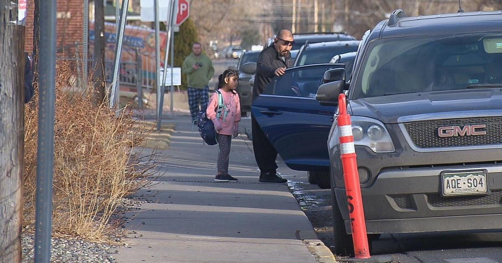

Changes in the works to make streets around Edgewater schools saferAfter increased community concern, the city of Edgewater is planning to make big changes to the traffic flow around their schools. With Edgewater, Lumberg and Jefferson High School, within blocks of each other, drop-off and pickup times can be tough for anyone to navigate. "It gets pretty packed," one parent told CBS News Colorado. Even a little intimidating for some. "I get here at like 2:45 to at least find a parking spot before it starts getting crazy," she added. But it's more than just a traffic headache, it's a growing safety concern. "The fear is always someone getting hurt," said Lumberg Elementary Principal Lindsay Petty. She says with the high school across the street and after adding hundreds of students during Jefferson County's consolidation, every street around their campus is an issue. "Because there isn't a lot of signage and the right crosswalk, families don't feel safe to drop off on any location other than our front," Petty added. Those doors sit on 22nd Avenue off Peirce Street, which is now the focus of big changes to come. The city of Edgewater received a grant from the Denver Regional Council of Governments that will be used to implement a new traffic plan around the three schools. "A potential option is to consider a left and a right turn here," Lauren Kirgis said. Kirgis is the DRCOG Transportation planner and says other recommendations it's making include making 22nd a one-way street, adding more crosswalks, four-way stops, and new hug-and-go areas to keep parents moving. "We are really looking at the families here that are bringing their kids to and from school every day we are also looking for feedback from neighbors who maybe are having challenges getting into their driveways for example," Kirgis said. Any changes are meant to both improve traffic flow and make drop-off and pick-up a little less scary for everyone. "That's really been the focus this year is safety," Petty said. The city wants feedback on the recommendations they have on the table. You can leave comments or other ideas on their interactive map online. for more features. |
 |